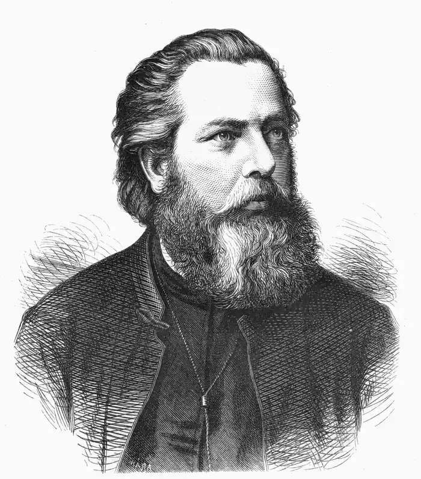

Сидір Воробкевич (1836 – 1903) – український письменник, композитор, музично-культурний діяч, православний священик, педагог, редактор часописів Буковини, художник. Мав псевдоніми: Данило Млака, Демко Маковійчук, Морозенко, Семен Хрін, Ісидор Воробкевич, С.Волох та інші.
Народився 5 травня 1836 р. в місті Чернівці в сім’ї священика, вчителя богослов’я, брат Григорія Воробкевича.
Його прадід утік свого часу з Литви й звався Сеульський Млака де Орочко, а дід переробив Орочко на Воробкевича. Частина прізвища Млака стала улюбленим псевдонімом Сидора. Батько його, Іван, на той час працював при Чернівецькій гімназії (тодішній ліцей) професором релігії та філософії. Його мати померла в 1840 році. Через п’ять років помер і батько, і Сидір разом зі своїм братом Григорієм залишилися сиротами. Отець Михайло Воробкевич забрав їх до своєї родини в місто Кіцмань. Першу науку в Кіцмані дітям надала бабка Параскева. Вона навчила любити рідну мову, пісню та народ. З уст своєї бабусі Сидір чув силу-силенну казок, пісень, народних оповідань про козаків і турків. Дід поета мав безліч оповідей про козацтво, Україну, Умань, Залізняка, Гонту. Навчався Сидір Воробкевич у Чернівецькій гімназії, згодом – у духовній семінарії, яку закінчив 1861 року. У гімназії він почав складати вірші й створювати до них музику. Потім був священиком у буковинських селах, де вивчав фольклор і побут місцевого населення. Музичну освіту Сидір здобував приватно в професора Віденської консерваторії Ф.Кренна. У 1868 році склав іспит на звання викладача співу й регента хору у Віденській консерваторії. З 1867 року викладав спів у Чернівецькій духовній семінарії та гімназії, а з 1875 р. – на богословському факультеті Чернівецького університету. Як композитор складав літературні пісні й псалми, компонував хорові твори, сольні пісні та оперети, писав мелодії на власні вірші. Творчість Літературна діяльність Сидіра Воробкевича розпочалася 1863 року, коли в збірнику "Галичанин" було надруковано п’ять перших віршів під загальною назвою "Думки з Буковини". 1877 року він видав перший буковинський альманах "Руська хата". Сидір Воробкевич – один із засновників і редакторів журналу "Буковинськая зоря". Працюючи в Чернівецькому університеті, він очолював "Руське літературне товариство", а з 1876 року – студентське товариство "Союз". Сидір Воробкевич писав українською, німецькою та румунською мовами. У літературному доробку письменника – вірші, поеми, оповідання, повісті реалістичного й романтичного характеру. Він розробляв теми історичного минулого – оповідання "Турецькі бранці" (1865), поема "Нечай" (1868), драми "Петро Сагайдачний" (1884), "Кочубей і Мазепа" (1891), писав про тяжку долю селянства – вірші "Рекрути" (1865), "Панська пімства" (1878). Одним з перших в українській літературі відобразив життя робітників (драма "Блудний син"). Найповніше талант С. Воробкевича проявився в ліричних віршах, де поет "розсипає велике багатство життєвих спостережень, осяяних тихим блиском щирого, глибокого, людського і народолюбного чуття" (І.Франко). Характерними рисами поезії Воробкевича є мелодійність, близькість до фольклорних джерел (вірш "Летить, летить чорний ворон..." та ін.). Багатьом його творам властивий гумор. Вірш Сидора Воробкевича "Мово рідна, слово рідне", покладений на музику автором, став хрестоматійним. Чимало творів С.Воробкевича перекладено болгарською, німецькою, російською й іншими мовами. Перебуваючи на викладацькій роботі в Чернівецькій духовній семінарії, гімназії, університеті, Сидір Воробкевич багато уваги приділяв молоді: уклав пісенники для початкової школи, створив посібники з теорії музики й співу та ін. Виступаючи одночасно як композитор і письменник, він створює чимало віршів, пісень для дітей ("Рідна мова", "То наші любі, високі Карпати", "Веснянка", "Осінь"). Після поїздки до Києва (1874) Воробкевич написав два чоловічі хори "Цар-ріка наш Дніпро" та "Я родився над Дніпром, отому я козаком". За життя письменника було видано збірку віршів "Над Прутом" (1901) за участю І.Франка. Перу поета належить ряд оповідань, новел, нарисів і сміховинок ("Нерон", "Сабля Сканденберга", "Клеопатра", "Іван Грозний"). Він – автор циклу статей "Наші композитори", у якому чільне місце відведене композиторові М.І.Глінці. Автор багатьох і різноманітних за жанром літературних, музичних творів — пісень і хорів, романсів, оперет. Писав музику на слова Т. Шевченка, Ю. Федьковича, І. Франка, В. Александрі, М. Емінеску, В. Бумбака. Помер Сидір Воробкевич 19 вересня 1903 року в Чернівцях. За словами І.Франка, С.Воробкевич був одним з "перших жайворонків нової весни нашого народного відродження".